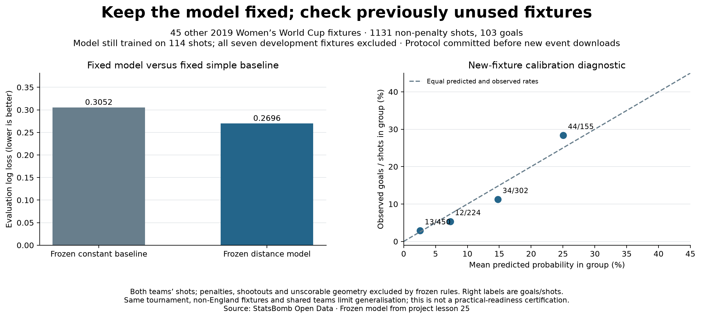

Football analyst training · Project lesson 27
Keep the model fixed. Bring in more match evidence.
We needed a stronger check than small, reused development groups. So we wrote and committed the evaluation rules before loading the remaining fixture shot files.
1. Separate training from evaluation
The model still learned from 114 shots. We kept its formula, scaling and coefficients fixed. We then checked its predictions on 1,131 shots from 45 other fixtures. These new shots were not used to train or change it. The seven development fixtures are excluded.
2. Compare with a frozen simple baseline
The baseline gives every shot the old training goal rate, 11/114, about 9.65%. Our distance model gives probabilities according to location. Both are scored against actual goal/no-goal outcomes in the new fixture set.

3. Read what this does and does not establish
This is positive evidence beyond comparing our own model versions on a tiny sample. It does not reveal each shot's exact true xG or establish readiness for every football task. The right panel still has gaps between predicted and observed group rates. All matches are from the same tournament, none involves England, and teams recur.
We have now inspected this set. If we repeatedly change the model to improve these results, it becomes development evidence. A later claim of fresh validation needs another reserved dataset.
4. Find the code and frozen protocol
Open 27_frozen_model_evaluation.py in Spyder. The protocol records fixed parameters, fixture IDs and metrics. The script predicts and scores; it never calls the fitting function. Downloaded events stay outside Git; saved prediction evidence can be checked offline.
5. Practical analyst task
Explain to an interviewer why “evaluated on 1,131 shots” does not mean “trained on 1,131 shots,” then state the result and one limit.
Check your explanation
“The model remained trained on 114 shots. Without changing it, I evaluated it against a frozen baseline on 1,131 shots from 45 other fixtures, where it had lower probability error. This is evidence in the same tournament, not a guarantee of general calibration or professional suitability.” Keep the guided-project attribution accurate.
Ask your teacher to review your explanation or walk through the prediction code. Independent interpretation remains a learning milestone.
Previous: calibration · Model-comparison reference · Full evaluation report